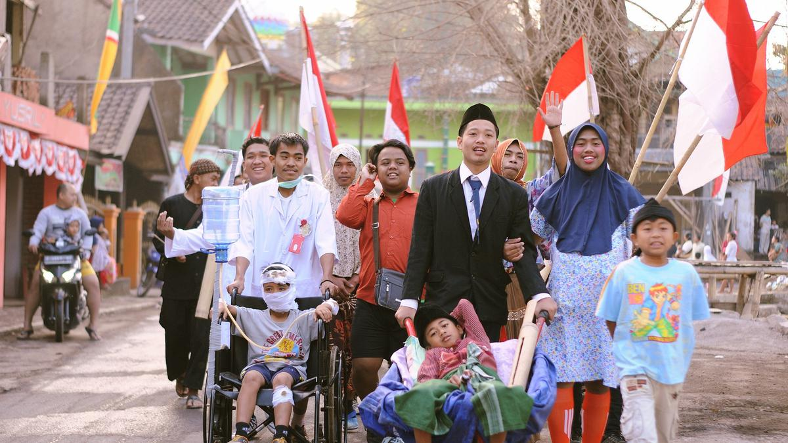

Dirgahayu Republik Indonesia yang Ke-77 tahun
17 Agustus 2022, bertepatan dengan 76 tahun peringatan hari kemerdekaan Republik Indonesia, sudah 77 tahun kita merdeka dan berjuang menjadi bangsa yang merdeka.
Pada peringatan 17 Agustus biasanya masyarakat dari berbagai daerah melakukan sebuah perayaan yaitu, berupa kegiatan lomba-lomba untuk memeriahkan setiap wilayahnya masing-masing.
Nah kali ini saya akan memberitahukkan peryaan 17 agustus oleh masyarakat desa tanjungsari kecamatan kajen, khususnya warga dukuh serang kidul yang akan mengadakan lomba-lomba peringatan 17 Agustus 2022 kali ini.
Perayaan HUT RI Ke-77
Berikut lomba yang akan di adakan oleh warga dukuh serang kidul :
| No | Jenis Lomba | Kategori Lomba |
|---|---|---|
| 1. | Panjat Pinang | Anak-anak |
| 2. | Estafet Air | Anak-anak |
| 3. | Sepeda Hias | Anak-anak |
| 4. | Memasukan Paku Dalam Botol | Anak-anak |
| 5. | Makan Kerupuk | Anak-anak |
| 6. | Cantol Caping | Ibu-ibu |
| 7. | Joget Balon | Ibu-ibu |
| 8. | Rias Muka | Ibu-ibu |
| 9. | Sambung Kata | Ibu-ibu |
| 10. | Makan Pisang | Ibu-ibu |
Demikian daftar lomba yang akan diadakan oleh masyarakat desa tanjungsari khususnya dukuh serang kidul